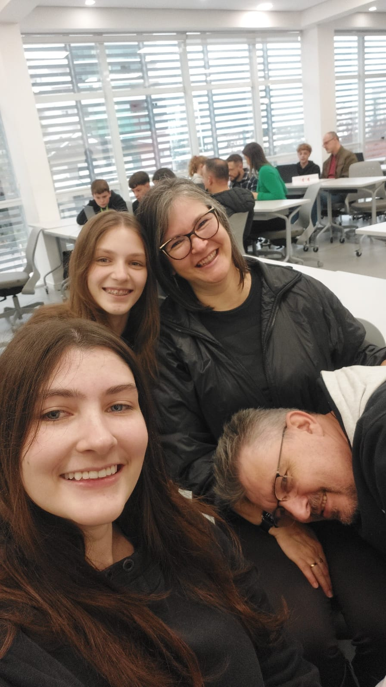

Aos resposaveís por Marina Hermany Schmidtmãe e pai
Mãe pai obrigado por sempre estar comigo
Bom eu não tenho muito o que dizer, e nem pra reclamar. Eu só quero agradecer vocês por:
Eu agradeço por vocês sempre estarem ali para me ajudar, e nunca desistir de mim
E obrigado mana por sempre me aguentar (coisa que eu também faço muito), e eu já to agradecendo por você me ajudar nas minhas atividades da escola (mesmo você não tendo muita escolha)
Quando eu e a mana dormíamos juntas
E isso é uma indireta pro pai deixar a gente adotar mais uma gatinha
Essa é a mãe viciada em dorama
E essa é a mana
E o pai
foto da familia

Nós também amamos muito você! Você é especial e sabemos que você sempre se preocupa conosco e está sempre disposta a nos ajudar. Também nos esforçamos para amar esse seu jeitinho de deixar o seu quarto sempre bagunçado, os pratos de comida espalhados pela casa e tua irmã disse que não vai mais te ajudar, se tu não falar das novidades (fofocas) do SENAC.
Aproveite ao máximo tudo o que o SENAC vai te oferecer, conhecimento, amizades, desafios e experiências. Se desafie, saia da sua zona de conforto, experimente (com juízo) coisas novas e desafiadoras, que esse é o momento de errar e NÃO tem problema errar, levante, sacuda a poeira, cure as feridas e tente novamente...